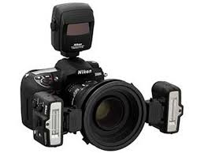

Qui puoi conoscere la nostra professionista di fotografia:
GiureDesignVendita di strumenti professionali per la fotografia.
I nostri prodotti hanno una garanzia di 3 anni per qualsiasi difetto di fabbrica. Abbiamo vasta scelta di prodotti da macchine fotografiche professionali a quelle per appasionati, filtri, lenti (macro), obbiettivi, faretti, fondali, flash.
ecco alcune novità :
Se compri una macchina fotografica avrai anche un corso di fotografia incluso. Ecco i notri consigli:
